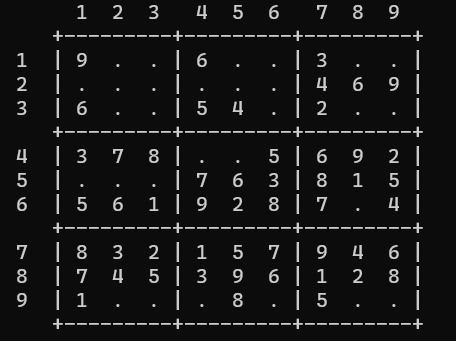
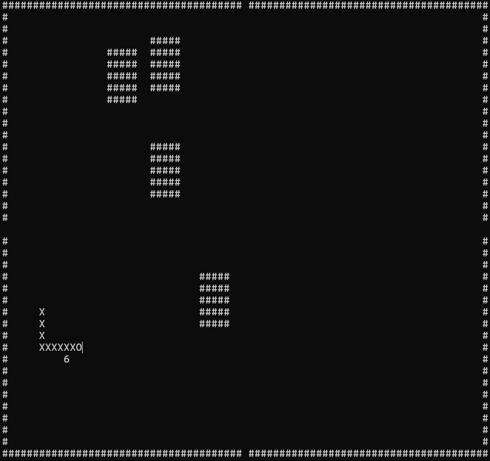
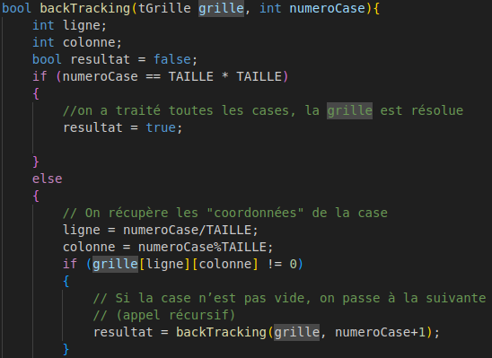
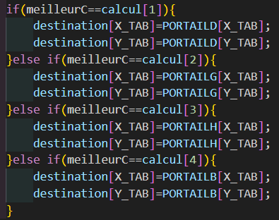
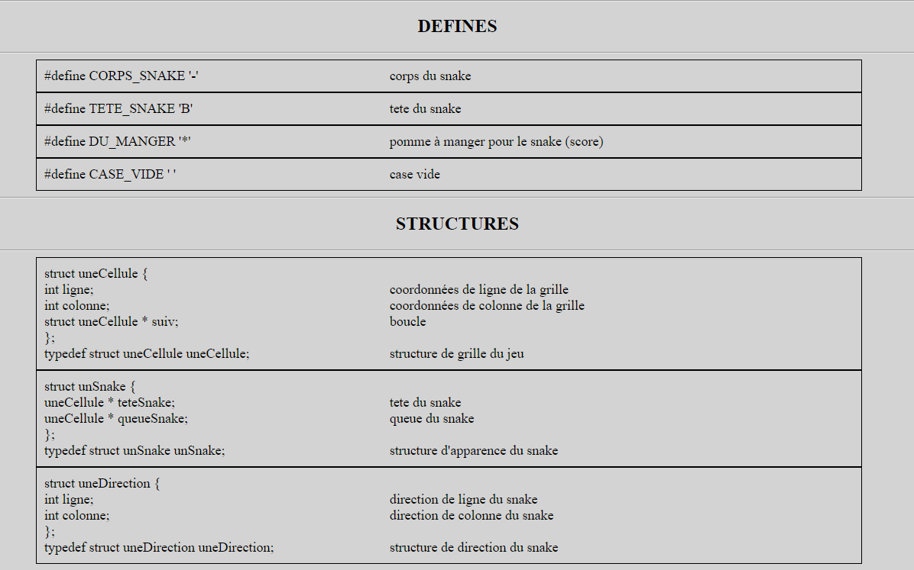
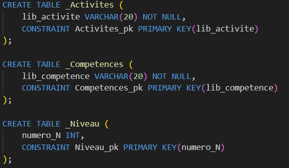
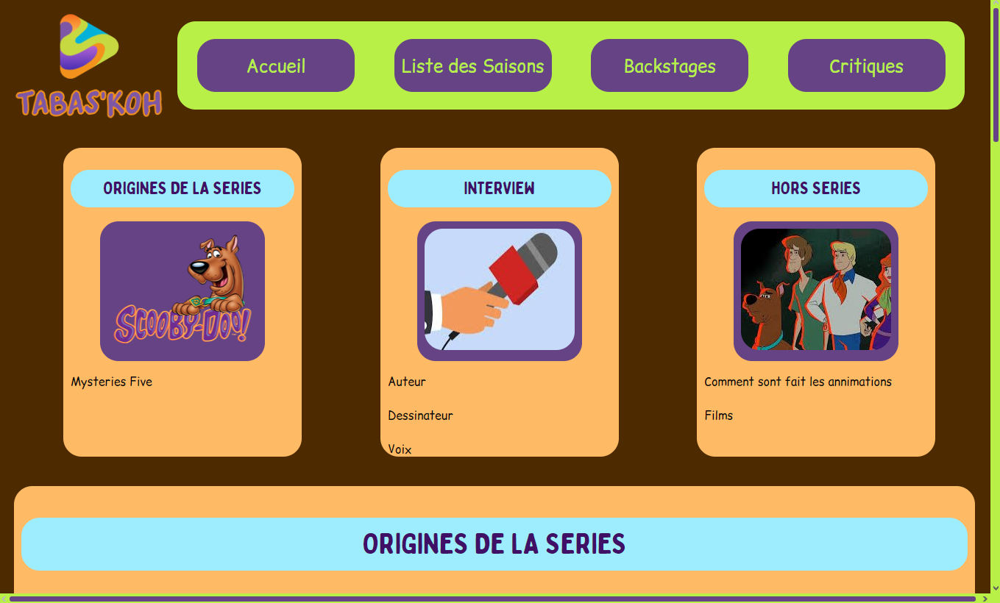
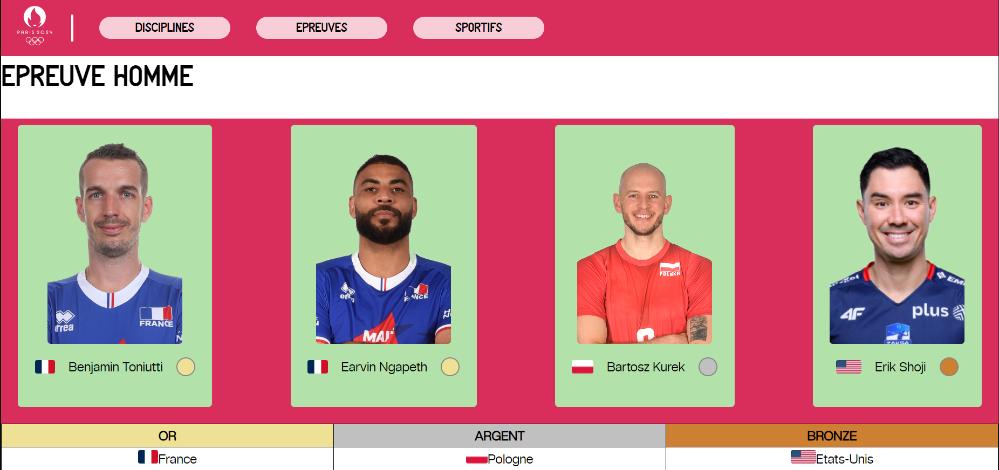

.png)
Je suis étudiant à l'IUT de Lannion en BUT informatique première année.
CVCompétences acquises
Durant mes études, j'ai participé à des projets tous très intéressants qui m'ont apporté
En voici la liste :
Réalisation d'un développement d'application
L'objectif : créer un jeu de Sudoku de n'importe quelle dimension de grille en langage C jouable sur terminal.
le code
L'objectif : créer un jeu de snake avec des pavées et des trous qui téléporte le serpent en langage C jouable sur terminal.
le code
Optimisation des applications informatiques
L'objectif : créer un résolveur de Sudoku à partir du programme précédemment créé.
le code
L'objectif : créer un snake qui va chercher ses pommes automatiquement à partir du programme de snake déjà fait précédemment
le code
Installation d'un poste pour le développement
L'objectif : réaliser un programme qui permet de créer la documentation d'un fichier écrit en langage C, en HTML et Markdown grâce à du PHP.
explication
Création d’une base de données
L'objectif : modéliser une partie du Programme National du BUT informatique en un diagramme de classe puis traduire ce diagramme de classe dans le modèle relationnel à l’aide du langage SQL.
explication
Création d’un site Web
L'objectif : créer un site web par groupe de 4 pour une entreprise factice créant du contenu de streaming pour une série au choix. Notre groupe a choisi Scooby-Doo.
ma page
L'objectif : créer un site web par groupe de 4 pour les Jeux Olympics et plus présisément sur une disipline au choix.
ma page